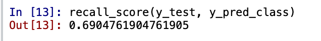
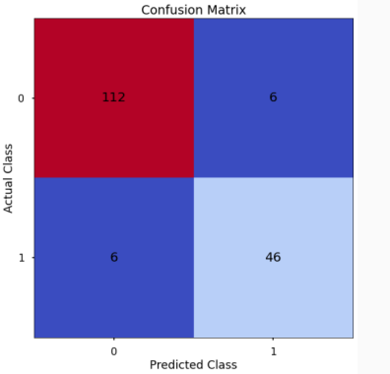
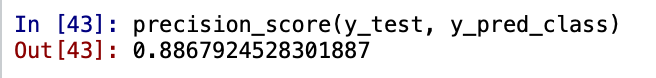
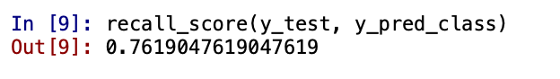

Business Case
Message from the ABC Grocery Team -
Hello Data Scientist,
We were so impressed with your work predicting Loyalty Scores that we're hoping you can help us again!
In July, we sent out mailers in a marketing campaign for our "delivery club". This was a new initiative that cost customers $100 per year for membership, and offered free grocery deliveries rather than the normal cost of $10 per delivery.
We feel like the campaign was successful, and if possible, we would like to run it again in the future. Last time however, we didn't have a Data Scientist on board, we just sent the mailers out to everyone, apart from a small group. Sending to everyone was really expensive to do - and next time we'd like to save on costs by only sending mailers to those customers that are most likely to sign up, rather than to everyone.
We'd love to understand the probability of any given customer signing up to this club. Perhaps there are relationships between their shopping behaviour and their characteristics as a customer? If we had this information we could target only those who are likely to sign - up. As I mentioned this would vastly reduce costs!
Thanks in advance,
ABC Grocery Web Team
Abstract
- Classification Algorithms are supervised learning algorithms used to predict a dependent outcome based on many independent inputs. The famous algorithms for classification include Logistic Regression, Decision Trees, Random Forests, KNN.
- The task of this project is to predict which customers are willing to sign in, so that the team will be sending marketing emails to the people willing to convert, instead of wasting money on the whole population.
- The four algorithms: Logistic Regression, Decision Trees, Random Forests and KNN will help me decide the people who are going to convert and submit this prediction to the team.
Introduction
The ABC Grocery Team wants to reduce their spending by sending emails to the people who are expected to sign up for the delivery club. But how to find this expected group is a problem that the team faces. Therefore, the team has assigned me with the task of finding this group and has provided the data of customers for analysis. This is a classic example of classification task and, I have to classify the pople who will be signing up for the delivery club. Therefore, I will use classification algorithms like Logistic Regression, Decision Trees, Random Forest and check the accuracies of all the algorithms that will predict sign ups correctly. I will compare all the algorithms and based on the accuracy scores decide which algorithm suits correctly for the data that has been provided. This will help the team to determine which people should receive a marketing email and send emails accordingly to people who are willing to signup.
Imlpementation
1. Reading the data
- The ABC Grocery team has provided me with a pickle file that contain data for customers.
- For reading the data for Classification I will use the Pickle library. Pickle has the pickle.load functionality to read data from pickle files.
- The data is already in the form of a DataFrame. DataFrames are easy for Data Manipulation.
- Below is the data for the classification.
Algorithm 1: Logistic Regression
Logistic Regression is a model used to predict the probability of a certain class or event based on one or more input variables.
It transforms linear relationships to a probablistic output through Logistic Function.
I will be implementing Logistic Regression to classify the customers based on the sign up flag provided. The steps are provided as follows:
1. Data Preprocessing for Logistic Regression
- Step 1 - Drop unnecessary columns:
The columns customer_id will not be required for my analysis hence I will eliminate the column.
To achieve this - I will use the drop functionality of pandas to remove the column. - Step 2 - Shuffle the data:
It is a best practice to shuffle the data before performing any further steps. If there is any unknown orderding in the data shuffling will help me eliminate this ordering and increase randomness in the data. For example, if the data is sorted based on user ids, on ascending or descending order, based on the users who listened to most artisits. Could be anything - and I want to eliminate this. Therefore, I will shuffle the data.
To achieve this - I will user the shuffle functionality of pandas to eliminate this ordering. This method takes the DataFrame as a parameter to shuffle the data. - Step 3 - Check the class balance:
Class balance will help me understand if there is an equal distribution of data. Class balance will be performed on the the purchased column as I want to know the people who listened to a particular artist, bought the album or not.
To achieve this - I will use the value_counts functionality of Pandas and normalize the results to get a percentage to make things more understandable.
The below image shows that the data is not too balanced and not too imbalanced, so for now I will keep it as it is. - Step 4 - Deal with Missing Values:
Eliminate missing values if there are any.
To achieve this - I will use the dropna functionality of Pandas to eliminate all the missing values.
The data does not have any missing values. - Step 5 - Dealing with Outliers:
I will first investigate if there are outliers in the data by using describe function of Pandas.
From the above diagram I can observe that distance_from_store column has a median value of 1.65 and a maximum valu of 44.37, there is a huge difference in these values, hence there might be some outliers.
Similarly for columns total_sales, total_items there is a huge difference between median and maximum values, hence there is a possibility of outliers.
Hence, I will be eliminating outliers, as outliers do not work great with Logistic Regression. - Using Box plot approach I have found that there are outliers in the data and I will eliminate the outliers
- Step 6 - Split Input and Output variables:
To bifurcate the data into input and output variables using X and y respectively.
To achieve this - I will create two variables X and y where I will eliminate the output column signup_flag in the X variable, i.e. the X variable will contain all the data except the prediction column signup_flag and the y variable will contain just the data for prediction column purchased_album. - Step 7 - Split Training and Test sets:
To bifurcate the X and y variables into training and test sets:
To achieve this - I will be importing the train_test_split library from sklearn.model_selection that helps in splitting the X,y data into X_train, X_test, y_train, y_test.
The test_train_split takes paratmeters as follows:
X,y: Where X and y are are input and output variables.
test_size: The size of testing and training. I want the training size to be 80% and the test size to be 20% therefore, I will use 0.2 as the value for test_size.
stratify: Stratify = y will mean that my training and test sets will have the same proportion of 1's and 0's. This is really helpful in classification problems. - Step 8 - Dealing with categorical variables:
It is observed that there is a categorical variable gender in the data and this must be converted to a numeric.
To convert categorical to numeric, I will use the OneHotEncoder technique.
To achieve this I will import the OneHotEncoder library from sklearn.preprocessing
In the below figure I can see that the gender column has been dropped to eliminate multicollinearity and a new column Gender_M has been introduced that holds numeric data of 1 and 0 to represent male and female. - Step 9 - Feature Selection: RFECV
I need to find the desired number of input variables that will describe the data perfectly, and eliminate unnecessary variables that do not help in predicting the outcome. Hence, I will use the method called RFECV to achieve to figure out the best set of varibales to use. The RFECV algorithm will help me determine the number of variables that must be used and what are those variables. - Recursive Feature Elimination Cross Validation fits a model that starts with all input variables, then iteratively removes those with the weakest relationship with the output until the desired number of features is reached.
- To implement RFECV I will import RFECV library from sklearn.feature_selection. This approach essentially fits a model to make predictions and since I am classifying the data using LogisticRegression I will fit the LogisticRegression model and instantiate the RFECV model and pass in the LosgisticRegression object.
Logistic Regression requires the data to be normalized and free from outlier therefore I will perform the following steps:

I will fit the model on the training data and find the optimal input variables.
The optimal number of variables found is 7. Now I will find the varibales that the algorithm has dropped. From the below table I can see that from 8 input variables now I have 7 variables.
I will plot the data with respect to the accuracy scores at each variable that the RFECV algorithm found.
From the above plot I can see that using 7 features, I will get an accuracy of 90%. Hence, I will use these 7 input variables that have been found by RFECV algorithm.
Logistic Regression Algorithm
2. Model Building
- Instantiate and Fitting the Model
I will import the LogisticRegression model from sklearn.linear_model and will instantiate the an object clf
I will fit the data on the training data that I created before.
4. Model Assessment
- Model Prediction:
To predict on the unseen data I will use the predict method. - Confusion Matrix:
Confusion matrix wll help me calculate Accuracy, Recall, Precision, F1-Score. - Accuracy:
Accuracy is the number of correct classification out of all the attempted classifications.
- Precision:
Of all observations that were predicted as positive, how many were actually positive.
- Recall:
Of all positive observations, how many did I predict as positive.
 - F1 - Score:
F1 Score is the harmonic mean of Precision and Recall. A good F1 Score comes when there is a balance between Precision and Recall, rather than a disparity between them. As the data is little imbalanced here, F1 Score is a good metric.
- Optimal Threshold:
In order to classify the data accordingly, a threshold must be placed at an optimal position. To figure out the optimal threshold I will test all the values between 0 and 1. After testing for all the threshold values between 0 and 1 I get the following graph:

From the plot above, I can see that, at the value of 0.44, I get a maximum F1 score of 78%. Therefore, I will use the optimal threshold value of 0.44 to classify the data, rather than taking the default value of 50% or probability of 0.5
Algorithm 2: Decision Trees for Classification
A Decision Tree is a model that splits the data into
I will be implementing Decision Trees to classify the customers based on the sign up flag provided. The steps are provided as follows:
1. Data Preprocessing for Decision Tree Classification
- Step 1 - Drop unnecessary columns
- Step 2 - Shuffle the data
- Step 3 - Check the class balance
- Step 4 - Deal with Missing Values
- Step 5 - Split Input and Output variables
- Step 6 - Split Training and Test sets
- Step 7 - Dealing with categorical variables
Decision Trees basically requires the data to be numeric and the preprocessing steps are almost similar to Logistic Refression. The steps are as follows:
Decision Tree Classifier Algorithm
2. Model Building
- Instantiate and Fitting the Model
I will import the DecisionTreeClassifier model from sklearn.tree and will instantiate the an object clf with max depth as 5 for now.
I will fit the data on the training data that I created before.
4. Model Assessment
- Model Prediction:
To predict on the unseen data I will use the predict method. - Confusion Matrix:

- Accuracy:
- Precision:
- Recall:
- F1 - Score:
- Finding Max Depth:
While building the model I had given a default depth of 5. To find the optimal depth I will iterate over depths over 1 to 15 to find the optimal depth and append the depth according to the accuracies i.e. I will find the optimal depth by checking accuracy of the algorithm at each depth and select the depth having maximim accuracy. I will plot depth vs accuracy to find the optimal depth.
From the above plot I can see that, at the depth of 9 the maximum accuracy found is 92%. Hence, the algorithm must use the maximim depth of 9 to build the Decision Tree.
- Plotting the Tree
Algorithm 3: Random Forest for Classification
A Random Forest is an ensemble model consisting of many Decision Trees working together across different randomnly selected subsets of data,
facilitating improved accuracy and stability.
I will be implementing Random Forest to classify the customers based on the sign up flag provided. The steps are provided as follows:
1. Data Preprocessing for Random Forest Classification
- Step 1 - Drop unnecessary columns
- Step 2 - Shuffle the data
- Step 3 - Check the class balance
- Step 4 - Deal with Missing Values
- Step 5 - Split Input and Output variables
- Step 6 - Split Training and Test sets
- Step 7 - Dealing with categorical variables
Random Forests basically requires the data to be numeric and the preprocessing steps are similar to Decision Tree Classification. The steps are as follows:
Decision Tree Classifier Algorithm
2. Model Building
- Instantiate and Fitting the Model
I will import the DecisionTreeClassifier model from sklearn.tree and will instantiate the an object clf with n_estimators i.e. number of decision trees as 500 and max_features i.e. the maximum number of variables used in each tree as 5 for now.
I will fit the data on the training data that I created before.
4. Model Assessment
- Model Prediction:
To predict on the unseen data I will use the predict method. - Confusion Matrix:
- Accuracy:

- Precision:

- Recall:
- F1 - Score:
- Feature Importance:
- Permutation Importance
Algorithm 4: K Nearest Neighbors for Classification
The KNN Algorithm predicts a class for an unknown data point using the most popular class of a number of nearly known data points.
The number of nearly data points used to form the prediction is denoted by K.
I will be implementing KNN to classify the customers based on the sign up flag provided. The steps are provided as follows:
1. Data Preprocessing for kNN Classification
- Step 1 - Drop unnecessary columns
- Step 2 - Shuffle the data
- Step 3 - Check the class balance
- Step 4 - Deal with Missing Values
- Step 5 - Deal with Outliers
- Step 6 - Split Input and Output variables
- Step 7 - Split Training and Test sets
- Step 8 - Dealing with categorical variables
- Step 9 - Feature Scaling
- Step 9 - Feature Selection
kNN basically requires the data to be numeric and scalesd and the preprocessing steps are similar to Logistic Regression. The steps are as follows:
KNN Algorithm
2. Model Building
- Instantiate and Fitting the Model
I will import the KNeighborsClassifier model from sklearn.neighbors and will instantiate the an object clf.
I will fit the data on the training data that I created before.
4. Model Assessment
- Model Prediction:
To predict on the unseen data I will use the predict method. - Confusion Matrix:
- Accuracy:
- Precision:
- Recall:

- F1 - Score:
- Optimal K value:
Model Summary
| Model Name | Accuracy | Precision | Recall | F1 Score | Optimal F1 Score |
|---|---|---|---|---|---|
| Logistic Regression | 86.62% | 78.73% | 69.04% | 73.41% | 78% |
| Decision Trees | 92.94% | 88.46% | 88.46% | 88.46% | 92.45% |
| Random Forests | 93.52% | 88.67% | 90.38% | 89.52% | 90% |
| KNN Classifier | 93.63% | 100% | 76.19% | 86.48% | 86.49% |
5. Conclusion
I have used all the classification algorithms on the data and I can conclude that the best F1 Score is shown by Decision Trees. I am using F1 Score as final metric as the data is little imbalanced. F1 Score is more reliable for this data. Therefore, I can head back to The ABC Grocery team and present my findings regarding the customers who are most likely to sign up to the delivery club. This way, the team will send mrketing emails only to customers who are willing to sign up, thus saving marketing costs of the team.